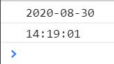
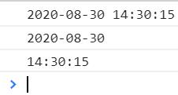

關於對時間格式的運算與操作，還蠻多人推薦使用 Moment.js 套件的。
一、使用 Moment.js 套件
範例如下
<!DOCTYPE html> <html> <head> <meta charset="utf-8"> <meta name="viewport" content="width=device-width"> <title>JS Bin</title> </head> <body> <script src="https://cdnjs.cloudflare.com/ajax/libs/moment.js/2.27.0/moment.min.js"></script> <script> console.log(moment().format("yyyy-MM-DD")); console.log(moment().format("HH:mm:ss")); </script> </body> </html>
執行結果如下

二、使用自行對 Date() 擴充的 Format 方法
<!DOCTYPE html> <html><head>
<meta charset="utf-8">
<meta name="viewport" content="width=device-width">
</head><body>
<script>
// 對Date的擴充套件，將 Date 轉化為指定格式的String
// 月(M)、日(d)、小時(h)、分(m)、秒(s)、季度(q) 可以用 1-2 個佔位符，
// 年(y)可以用 1-4 個佔位符，毫秒(S)只能用 1 個佔位符(是 1-3 位的數字)
// 例子：
// new Date().format("yyyy-MM-dd hh:mm:ss.S") ==> 2006-07-02 08:09:04.423
Date.prototype.format = function (fmt) {
var o = {
"M+": this.getMonth() + 1, //月份
"d+": this.getDate(), //日
"h+": this.getHours(), //小時
"m+": this.getMinutes(), //分
"s+": this.getSeconds(), //秒
"q+": Math.floor((this.getMonth() + 3) / 3), //季度
"S": this.getMilliseconds() //毫秒
};
if (/(y+)/.test(fmt)) fmt = fmt.replace(RegExp.$1, (this.getFullYear() + "").substr(4 - RegExp.$1.length));
for (var k in o)
if (new RegExp("(" + k + ")").test(fmt)) fmt = fmt.replace(RegExp.$1, (RegExp.$1.length == 1) ? (o[k]) : (("00" + o[k]).substr(("" + o[k]).length)));
return fmt;
}
Date.prototype.addSeconds = function (seconds) {
this.setSeconds(this.getSeconds() + seconds);
return this;
}
Date.prototype.addMinutes = function (minutes) {
this.setMinutes(this.getMinutes() + minutes);
return this;
}
Date.prototype.addHours = function (hours) {
this.setHours(this.getHours() + hours);
return this;
}
Date.prototype.addDays = function (days) {
this.setDate(this.getDate() + days);
return this;
}
Date.prototype.addMonths = function (months) {
this.setMonth(this.getMonth() + months);
return this;
}
Date.prototype.addYears = function (years) {
this.setFullYear(this.getFullYear() + years);
return this;
}
function diffSeconds(milliseconds) {
return Math.floor(milliseconds / 1000);
}
function diffMinutes(milliseconds) {
return Math.floor(milliseconds / 1000 / 60);
}
function diffHours(milliseconds) {
return Math.floor(milliseconds / 1000 / 60 / 60);
}
function diffDays(milliseconds) {
return Math.floor(milliseconds / 1000 / 60 / 60 / 24);
}
</script>
<script>
document.addEventListener("DOMContentLoaded", function () {
console.log(new Date().format("yyyy-MM-dd hh:mm:ss"));
console.log(new Date().format("yyyy-MM-dd"));
console.log(new Date().format("hh:mm:ss"));
});
</script>
<!– 日期運算範例 –>
<script>
// Now Time
let now_d = new Date();
// Specific Time
var spe_d1 = new Date('August 19, 2018 23:15:30');
var spe_d2 = new Date('2019-03-12 21:34:00');
var spe_d3 = new Date('2019/03/12 21:34:00');
var spe_d4 = new Date(1558947486000); // timestamp millisecond
console.log([
now_d.format("yyyy-MM-dd hh:mm:ss"),
spe_d1.format("yyyy-MM-dd hh:mm:ss"),
spe_d2.format("yyyy-MM-dd hh:mm:ss"),
spe_d3.format("yyyy-MM-dd hh:mm:ss"),
spe_d4.format("yyyy-MM-dd hh:mm:ss"),
]);
// Add days
console.log([
now_d.addDays(1).format("yyyy-MM-dd hh:mm:ss"),
now_d.addDays(-1).format("yyyy-MM-dd hh:mm:ss"),
]);
// Add years
console.log([
now_d.addYears(3).format("yyyy-MM-dd hh:mm:ss"),
now_d.addYears(-3).format("yyyy-MM-dd hh:mm:ss"),
]);
// Date diff function
console.log(diffSeconds(now_d - spe_d2));
console.log(diffMinutes(now_d - spe_d2));
console.log(diffHours(now_d - spe_d2));
console.log(diffDays(now_d - spe_d2));
</script></body>
</html>
執行畫面

參考資料：